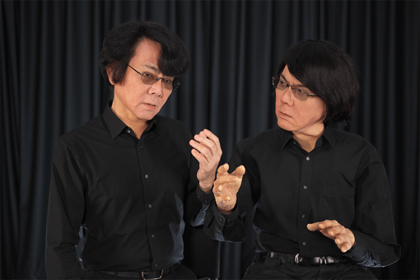
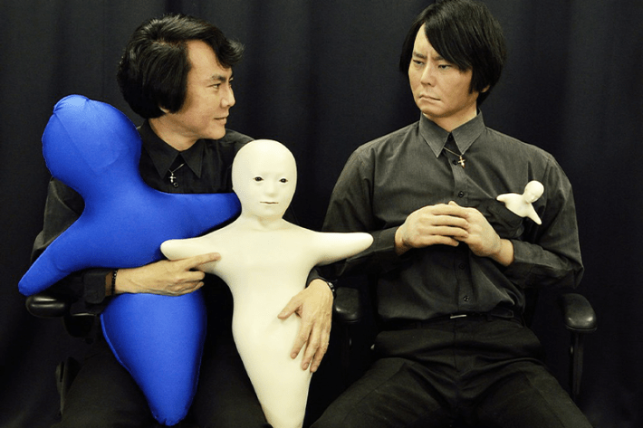

I got off the elevator at the 18th floor of a gleaming skyscraper in Tokyo last month and walked to the office of robot pioneer Hiroshi Ishiguro. At the front desk, I was met by a smiling female avatar on a computer screen who asked for my information. A knee-jerk rebellion made me turn away and walk down a hallway where I found a young man who showed me to the roboticist’s office.
For more than 20 years now, Ishiguro, 63, has been creating robots that look and act uncannily like people—notably himself. He calls his silicone and electronic doppelgangers “Geminoids,” after the Latin term geminus, which means twin. One of his earliest and eeriest twins is the robot he modeled on his daughter, Risa, when she was 4. Ishiguro programmed his many books and media interviews into his latest iteration of himself, which he uses to give conference lectures and teach his classes at Osaka University. His company, Avita, based here in Tokyo, is building avatar systems that can be used for various businesses.
We cannot separate the human and the technology. It is part of our brains and our bodies.
Under the darkening sky of artificial intelligence, I recently read and was enchanted by Ishiguro’s 2020 book, How Human Is Human? The book is fascinating because it taps into the fluid boundaries between humanoids and humans, the robot and its operator. It presents a parallel reality, where technology carefully attends to human comfort and dignity. Which I find refreshing. It’s nearly impossible now to read about autonomous, human-like technology with simple curiosity, when AI is getting pushed into every corner of our lives. Reading Ishiguro’s delicate and insistent efforts to avoid any discomfort when a researcher needs to fix the dress of a female Geminoid, while also reading about the latest AI release undressing everyone without their consent, is mind-spinning. What makes the difference?
Ishiguro’s office resembled a NASA control center. He sat at a desk heading rows and rows of other desks with more people facing computers. My first thought was that it was Ishiguro’s Geminoid slumping behind the computer. But it was the man himself, full of life and energy for his quest to understand humans by making copies of them. Born and raised in Japan, Ishiguro spoke a clipped English that was by turns philosophic and poetic.
The Geminoids are strange.
Why?
My reaction is not how strange it is to have a copy of you. What is strange is making a copy and then observing people’s reactions to it. The usual way of thinking of human-like technologies is the Turing test. Can we fake human behavior in a machine to fool people? You are not doing that.
Yes. The original Turing test is just based on text. It is a text conversation. It is quite easy to cheat on the interlocutors. But a human being is a multimodal entity, and we want to interact through many sensations: gestures, eye contacts, so many factors we have. My basic approach is to see if we can feel a human-like presence. That is the challenge in robotics. We cannot decompose the humans into a text conversation. It is not the right way. On the other hand, we can construct human-like robots. The important thing is that we do not have a definition of a human. Therefore, the Turing test is meaningless.
That makes a lot of sense. The Turing test has a whole culture that goes with it. In constructive logic and mathematics, you do not need to start from defining the thing.
That’s a fundamental difference between European countries and Japan. You think the human is so special and you can define humanity in some sense. You believe in human divinity. We do not believe that. We can feel many humanities in the natural things. If you go to a shrine, you can feel something, right? We can find the feeling of humanity in many places. Therefore, we can have this kind of challenge: Develop the robot and see if you can feel the humanity there to understand what humanity is.

MIRROR, MIRROR: The remarkable resemblance between Hiroshi Ishiguro and his “Geminoid” robot double stirs bystanders to question the meaning of human presence. Credit: Kurima Sakai.
We are the species that makes stuff and we see ourselves through it. This goes together with the process of development. But how can you measure how close you are to it?
We can see so many humanities as we improve the performance of the robot. We are always doing similar things through practical tools, like a smartphone. There are intuitions, inspiration. Steve Jobs did not know. He just made a commercial product and people accepted it. Now researchers are studying the meaning of that design. We didn’t expect that the internet could enhance the human social abilities. We now understand more about those social abilities.
Well, I don’t think that’s quite true ...
I need to tell you a very important thing. From the beginning, the human is very tightly coupled with their technologies. We cannot separate the human and the technology. It is part of our brains and our bodies. People always try to compare technologies and humans. That is wrong. We do not know the definition of the human. But we can say that the human is different from other animals because we can enhance humans through technologies. Technologies are part of human evolution. When we have babies, we give them many vaccinations.
Sure. We are niche constructors. But we are not always enhancing. We could be cutting off parts. We do not just change the world through our tools, we perceive the world, see reality, through them. When a new tool comes about, the reality we perceive and what is important also changes. Technologies are like spotlights. You enhance one part, but you may not be seeing the other part.
That is evolution.
Why did you start with the idea that a robot should be a copy of somebody?
My first robot was my daughter’s copy. Then I felt it is better to make my copy. I can easily compare the android to myself. Today, I am using an LLM, so the android speaks like me. It is very much like me. I just finished the next big proposal. which is how to form the ego. The ego is the collection of the personalities. I may have a different personality with my family, my students, my colleagues, my company. My self is a collection of these personalities. The funny thing is that it is now more clever than me. It is very funny. Many students like to talk with the Geminoid because it can answer any kind of question.
We are nothing. When we die, we are going back to nature. Nothing is the most important thing.
What Geminoid are you building now?
Sōseki Natsume is a very important writer in Japan and we are making a Geminoid of him. He appears in almost all school textbooks. His literature is wonderful. But his personality was very bad. He did domestic violence. As researchers, we had a big argument on whether his android should do violence to his family. A big argument because there are hidden personalities but important personalities. I proposed a policy. That when a famous person dies, we do not remember their bad sides. When we see a statue, we see the positive aspect of the person—that is what it means to be a statue.
I don’t know about that—it seems reductive. I was recently in Greece, where I grew up, and I went to see my best friend. Her father had just died. She told me a lot of stories about him. Some stories were wonderful and some were horrible. In telling them, she was saying how she felt love and also hate.
Yes, but what I am saying is that we are not ready to mimic real personalities. We do not have the technology. Therefore, we are doing the research for that. So, when we develop the android for Sōseki, we do not have the technology to make the multiple personalities. But if we develop enough technology to mimic many personalities, of course, we will make more realistic Sōseki Natsume. If we can create a robot that has multiple personalities, everyone could understand that we have multiple personalities. A technology is updating the concept of humanity.
How so?
Someone’s behavior can be very different, maybe very wild, in some situations. But that is a possibility in humanity. If we change the situation, we have different personalities. There are many depressed people who cannot go out but are very active on the internet. The technology is providing the opportunity to be normal in a certain sense. Autistic kids cannot speak to humans but can speak to robots. We need to have more options. Technology gives us many options.
The way I understand what you’re saying is people can become less shy, for instance, not just by observing the robot. They can experience, embody the robot, merge with it and feel what it is like to be not shy.
Yes. We can extend this idea to societies. If something happens in Japan, I feel pain. That is the human being. We can easily enhance our body properties. We can easily extend the boundaries of our bodies. That is the power of human sociality. When I get drunk, I do not remember it, but other people will tell me. The memory of my experience is in society.
Our brain is connected to others in many ways. It is connected to the body, but it is connected to other people. We are simulating these kinds of connections. What are the connections in families? My wife and I had no connection initially. But we are now in some kind of connection, also through our daughter. I remember a strange experience when I was working in the U.S. I was renting a car but eventually the car broke down with a serious problem. I felt I had lost a part of my body. That is a property of the brain.

HEARTFELT CONVERSATION: Hiroshi Ishiguro (alongside his Geminoid double) with his “Hugvie.” The hug pillow contains a pocket for a cell phone; as the user speaks, the Hugvie vibrates with the rhythm of a heartbeat. Credit: Hugvie™: ATR Hiroshi Ishiguro Laboratories.
When I’m in Japan, I notice so many cultural differences. For example, the Western way to distinguish between memory and imagination is that memory is real, imagination is not.
In Japan, we do not have this kind of opposition. Basically, we are nothing. When we die, we are going back to nature. Nothing is the most important thing. In European countries, you believe in human divinity. The human is different than nature. We consider it part of nature, not special. So, we do not distinguish the imagination from the real sensations. Everything happens here, no boundaries. We can think something in our brain and by watching the natural world we may get some ideas. That is perception, and we cannot clearly separate it from imagination.
This is great. And you also have the concept of lineage, which allows you to make more sense of the extended sense of who you are.
I have a hypothesis. Japan is a small country; 2,000 years of living on a small island. As a consequence, we feel like family members with each other. We do not need to distinguish between one and another, between humans and rock, to feel like we are a small island in the universe. This situation has given us our sense of how the world is. It is different than the European countries. You always needed to care about your neighbor. We did not.
In Greece, we had the sea, earthquakes, and volcanoes, and the sense that nature is very rich, it can feed you and sometimes kill you.
Yes, and you have so many gods and originally, we had many natural gods.
One thing that is hard to miss is that humans make gods in the image of their technologies.
And based on these ideas, we never hesitate to accept a new technology because they are part of our nature.
You created a performance piece, Sayonara: Android-Human Theatre, where a female Geminoid recites poems to a dying girl. You’ve written the android reminded you of the Virgin Mary.
It is so romantic. People were crying. People find it natural to accept the robot message. If it was a human there would be more doubt. It takes time to trust a human.
Maybe audiences weren’t seeing a robot as much as a god statue. That’s what you were reproducing.
The most important thing is to encourage people’s imagination. Humans are so complicated. We have so many personalities, so many strong emotional expressions. A bit less humanity is good for encouraging human imagination.
When reading your work, I’m struck by your statements that scientists and engineers are there to support artists. That is so unlike current AI development.
That is very important because we are tackling ambiguous and unknown things. Humans are valuable and have imagination and curiosity. The most important question is what we can do to encourage that. That is what we need to understand and design better AI and robots. It is better to work with artists to create something new. We need to have an artistic mind. 
Lead image: Ishiguro Lab, University of Osaka
References
- Original Article: https://nautil.us/how-human-is-human-1270990/